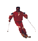

- https://www.cdc.gov/
- https://en.wikipedia.org/wiki/Rutabaga
- https://www.eatrutabagas.com/
- https://www.webmd.com/diet/health-benefits-rutabaga#1
- https://askjeeves.net/
- https://www.pbs.org/food/recipes/stewed-rutabagas/
- https://www.vegetables.co.nz/vegetable-classification/tubers/
- https://www.jazwares.com/brands/micro-machines 